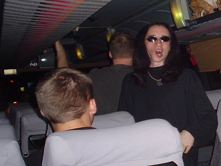
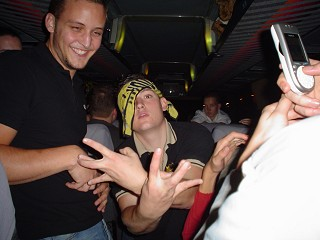
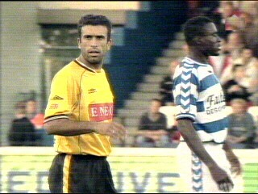
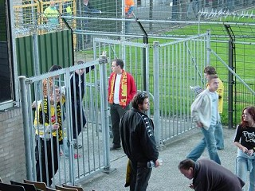
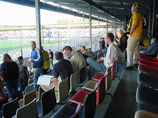
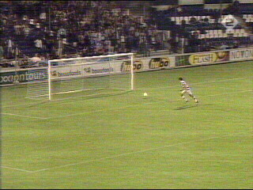
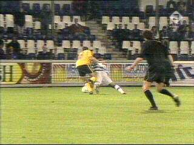
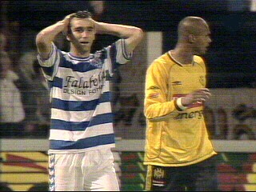
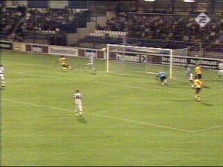

| FC Zwolle - Roda JC (0-0) 13 september 2003 |

Zowel SV, FP en WSU zetten een bus in.

Sfeerbeeld aan boord van de WSU-bus.

Roda begint de wedstrijd met 5 geblesseerde
basisspelers. Vooral de voorhoede kampt met
personele problemen. Anastasiou en Berglund
vormen het aanvalskoppel.

Voor een trip naar het Oosterenk stadion bestaat
weinig animo.

Nauwelijks 150 Rodasupporters namen plaats in
het zwaar verouderde stadion van FC Zwolle.

In een weinig verheffende wedstrijd "scoort"
Hristov vlak voor rust een al dan niet vermeend
buitenspeldoelpunt dat wordt afgekeurd.

Diezelfde Hristov probeert enkele malen zonder
succes een penalty te versieren.....

......wat hem uiteindelijk op een gele kaart komt
te staan.

In de slotfase schiet Addo op de paal. Het blijft
0-0 en Roda blijft steken in de middenmoot.
FC Zwolle:
Vd Werff, Ravensbergen, Yobo, Parnela (84.De Ridder),
Vd Haar, V Dinteren (80. Promes), Karlsen, Takak,
Bosschaart (46. Roelofsen), Hristov, Cvetkov
Roda JC:
Kujovic, Sonkaya (70. Vandenbrouck), Luijpers,
Brouwers (37. Rudge), Filipovic, Addo, V Dijk,
Vicelich, V Dessel, Berglund, Anastasiou (72. Elberkani)
Scheidsrechter: Reinold Wiedemeijer
Toeschouwers: 6.000
Kaarten
Geel: Hristov (FC Zwolle), Berglund, Vandenbrouck (Roda JC)